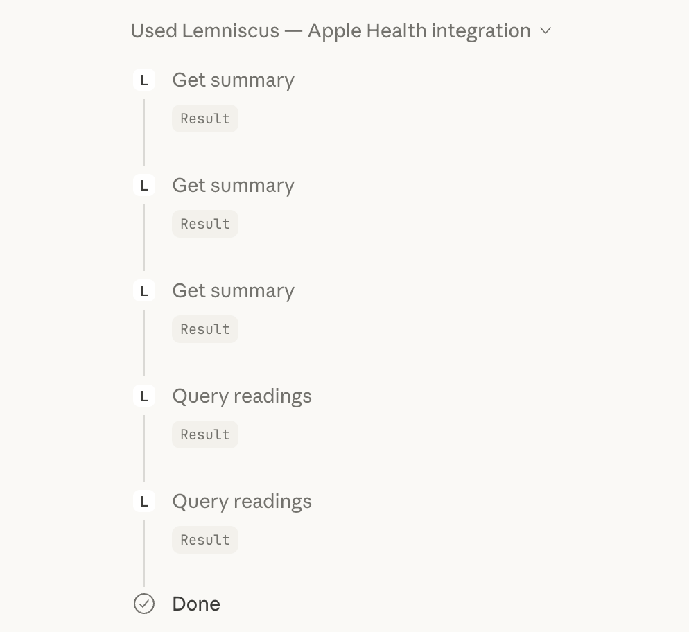
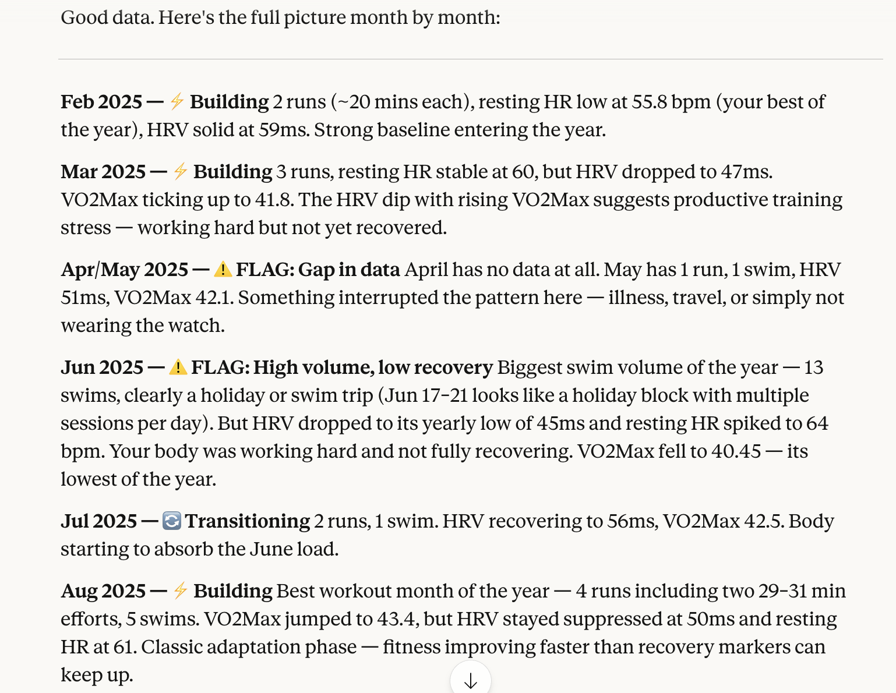

An open-source MCP server that lets Claude query your Apple Health data. Export from your iPhone, drop in a folder, ask questions in natural language. All storage is local.


All storage and indexing happens locally. Data is only sent to Claude when you ask a question — no separate cloud, no accounts.
All data stored and indexed in a local SQLite database. Only shared with Claude when you query it — no additional cloud services.
Install as a Claude Desktop extension with one click. No Python, no terminal, no package managers required.
Pre-computed descriptive statistics for every metric — mean, median, p5, p95. Claude gets baseline context immediately.
Four small, fast MCP tools that Claude chains together. Overview first, then drill down into specific metrics and date ranges.
Drop a new Apple Health export in the data folder. The server detects and indexes it automatically on startup.
~40 MB extension. No vector search, no AI models, no heavy dependencies. Just structured queries over your data.
Every metric in your Apple Health export, indexed and queryable by Claude.
Simple architecture. No AI models, no vector search — just structured queries.
Two ways to use Lemniscus. Choose what fits you best.
Download the extension file and drag it into Claude Desktop. No terminal needed.
Clone the repo and run with Claude Code for a developer-friendly workflow.
git clone https://github.com/cjgoodmaker/lemniscus_open.git
cd lemniscus_open && bash setup.sh
export.xml into data/claude — MCP connects automaticallyOne-time export, about two minutes.
Tap your profile picture in the top-right corner.
Scroll down and tap "Export All Health Data". This creates a zip containing your export.xml.
AirDrop, iCloud Drive, or email the zip to yourself. Unzip and copy export.xml to your Lemniscus data folder.
Open source under the MIT License. Free forever.